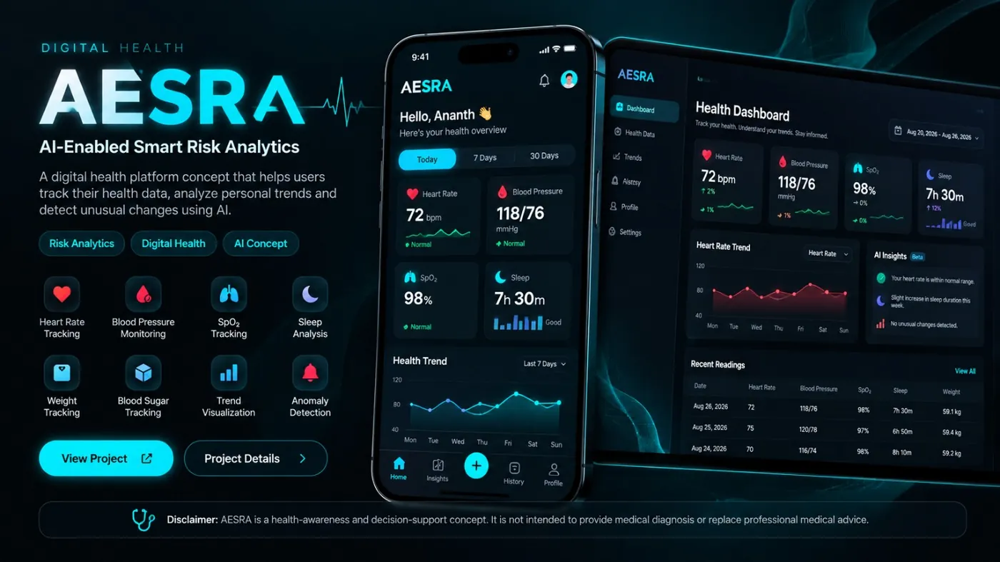

AESRA — AI-Enabled Smart Risk Analytics
A digital-health platform concept designed to help users understand personal health trends through health-data tracking, baseline analysis, trend visualization and anomaly detection.
- Digital Health
- AI/Data Analytics
- Anomaly Detection
- Prototype, in progress

Key features
- Personal health profile
- Health-data tracking
- Personal baseline analysis
- Trend visualization
- Anomaly detection
- Health-awareness alerts
- Daily/weekly dashboard
- Health history
- Future wearable integration
Tech / Concepts
- Python
- FastAPI
- Pandas
- NumPy
- Scikit-learn
- JavaScript
- Chart.js
- Firebase
Project type
Digital Health • AI/Data Analytics • Anomaly Detection
Important
Not medical adviceAESRA is a health-awareness and decision-support concept. It is not intended to provide medical diagnosis or replace professional medical advice.